GridLayout
Grid layout manager UI container
Description
A grid layout manager UI container positions UI components along the rows and
columns of an invisible grid. Use the GridLayout object to modify the
appearance and behavior of a grid layout manager after you create it.
Creation
Create a grid layout manager in an app using the uigridlayout
function.
Properties
Grid
Column spacing, specified as a scalar number of pixels between adjacent columns in the grid. The number you specify applies to all columns.
Row spacing, specified as a scalar number of pixels between adjacent rows in the grid. The number you specify applies to all rows.
Padding around the outer perimeter of the grid, specified as a vector of the form
[left bottom right top]. The elements of the vector are described
in the table below.
| Vector Element | Description |
|---|---|
left | Distance in pixels between the inner left edge of the parent container and the left edge of the grid. |
bottom | Distance in pixels between the inner bottom edge of the parent container and the bottom edge of the grid. |
right | Distance in pixels between the inner right edge of the parent container and the right edge of the grid. |
top | Distance in pixels between the inner top edge of the parent container and the top edge of the grid. The inner top edge of the parent container starts below all decorations such as titles, tab labels, or menu bars. |
Color
Background color, specified as an RGB triplet, a hexadecimal color code, or one of the color options listed in the table.
RGB triplets and hexadecimal color codes are useful for specifying custom colors.
An RGB triplet is a three-element row vector whose elements specify the intensities of the red, green, and blue components of the color. The intensities must be in the range
[0,1]; for example,[0.4 0.6 0.7].A hexadecimal color code is a character vector or a string scalar that starts with a hash symbol (
#) followed by three or six hexadecimal digits, which can range from0toF. The values are not case sensitive. Thus, the color codes"#FF8800","#ff8800","#F80", and"#f80"are equivalent.
Alternatively, you can specify some common colors by name. This table lists the named color options, the equivalent RGB triplets, and hexadecimal color codes.
| Color Name | Short Name | RGB Triplet | Hexadecimal Color Code | Appearance |
|---|---|---|---|---|
"red" | "r" | [1 0 0] | "#FF0000" |
|
"green" | "g" | [0 1 0] | "#00FF00" |
|
"blue" | "b" | [0 0 1] | "#0000FF" |
|
"cyan"
| "c" | [0 1 1] | "#00FFFF" |
|
"magenta" | "m" | [1 0 1] | "#FF00FF" |
|
"yellow" | "y" | [1 1 0] | "#FFFF00" |
|
"black" | "k" | [0 0 0] | "#000000" |
|
"white" | "w" | [1 1 1] | "#FFFFFF" |
|
This table lists the default color palettes for plots in the light and dark themes.
| Palette | Palette Colors |
|---|---|
Before R2025a: Most plots use these colors by default. |
|
|
|
You can get the RGB triplets and hexadecimal color codes for these palettes using the orderedcolors and rgb2hex functions. For example, get the RGB triplets for the "gem" palette and convert them to hexadecimal color codes.
RGB = orderedcolors("gem");
H = rgb2hex(RGB);Before R2023b: Get the RGB triplets using RGB =
get(groot,"FactoryAxesColorOrder").
Before R2024a: Get the hexadecimal color codes using H =
compose("#%02X%02X%02X",round(RGB*255)).
Interactivity
Visibility of children, specified as 'on' or
'off'. , or as numeric or logical 1
(true) or 0 (false). A
value of 'on' is equivalent to true, and
'off' is equivalent to false. Thus, you can
use the value of this property as a logical value. The value is stored as an on/off
logical value of type matlab.lang.OnOffSwitchState.
Set this property to 'off' to hide all child components in the
grid and their descendants. The children and their descendants are hidden regardless
of the value of their Visible properties. When components are
hidden, you can get and set their properties even though they do not appear in the
app.
When you set this property to 'on', the children and their
descendants are visible only if their Visible properties are also
set to 'on'.
Setting the Visible property on the grid does not change the
values of the Visible properties of its descendants.
Ability to scroll, specified as 'off' or
'on', or as numeric or logical 1
(true) or 0 (false). A
value of 'on' is equivalent to true, and
'off' is equivalent to false. Thus, you can
use the value of this property as a logical value. The value is stored as an on/off
logical value of type matlab.lang.OnOffSwitchState.
Setting this property to 'on' enables scrolling within the grid
layout manager. In order to scroll, these conditions must also be met:
The sum of the values specified for the
'RowHeight'property of the grid layout manager must be larger than the height of the parent container.The sum of the values specified for the
'ColumnWidth'property of the grid layout manager must be larger than the width of the parent container.At least one row or column of the grid layout manager must be set to a fixed pixel height or width.
The grid layout manager must contain components.
Certain types of charts and axes do not support scrollable containers. However, you can place the chart or axes in a nonscrollable panel, and then place the panel in the scrollable container. For more information, see Display Graphics in App Designer.
Context menu, specified as a ContextMenu object. Use this
property to display a context menu when you right-click on the grid layout manager.
Create the context menu using the uicontextmenu function.
Position
This property is read-only.
Location and size of the grid layout manager, returned as a four-element vector of the form [left bottom width height]. This table describes each element in the vector.
| Element | Description |
|---|---|
left | Distance from the inner left edge of the parent container to the left edge of the grid layout manager |
bottom | Distance from the inner bottom edge of the parent container to the bottom edge of the grid layout manager |
width | Distance between the left and right edges of the grid layout manager |
height | Distance between the bottom and top edges of the grid layout manager |
All measurements are in pixel units.
This image shows the areas defined by the Position value (orange solid
line) and the InnerPosition value (blue
dashed line) of a grid layout manager with some UI
components.
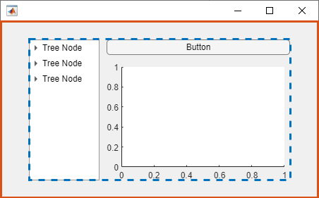
This property is read-only.
Location and size of the grid layout manager, excluding padding, returned as a
four-element vector of the form [left bottom width height]. This
table describes each element in the vector.
| Element | Description |
|---|---|
left | Distance from the inner left edge of the parent container to the inner left edge of the area of the grid layout manager into which components can be placed |
bottom | Distance from the inner bottom edge of the parent container to the inner bottom edge of the area of the grid layout manager into which components can be placed |
width | Distance between the inner left and inner right edges of the area of the grid layout manager into which components can be placed |
height | Distance between the inner bottom and inner top edges of the area of the grid layout manager into which components can be placed |
All measurements are in pixel units.
The InnerPosition value is affected by the value of the
Padding property. If Padding is [0 0
0 0], then the InnerPosition property value is
identical to the Position property value.
This image shows the areas defined by the Position value
(orange solid line) and the InnerPosition value (blue dashed line)
of a grid layout manager with some UI components.
This property is read-only.
Location and size of the grid layout manager, returned as a four-element vector of
the form [left bottom width height]. All measurements are in pixel
units.
This property value is identical to the Position property
value for grid layout managers.
Layout options, specified as a
GridLayoutOptions object. This property specifies options for a
nested grid layout container. If the grid layout is not a child of another grid layout
container (for example, it is a child of a figure or panel), then this property is
empty and has no effect. However, if the grid layout is a child of another grid
layout, you can place that child grid in the desired row and column of the parent grid
by setting the Row and Column properties on
the GridLayoutOptions object.
For example, this code nests grid2 in the third row and second
column of
grid1.
grid1 = uigridlayout([4 3]); grid2 = uigridlayout(grid1); grid2.Layout.Row = 3; grid2.Layout.Column = 2;
Row or Column property as a two-element
vector. For example, this command spans grid2 over columns
2 through 3 of
grid1:grid2.Layout.Column = [2 3];
Callbacks
Callback Execution Control
Parent/Child
Parent container, specified as a Figure object or
one of its child containers: Tab, Panel, ButtonGroup, or
GridLayout. If no container is specified,
MATLAB calls the uifigure function to create a new Figure object that serves as the parent container.
Children, returned as an array of UI component objects. Use this property to view
the list of children or to reorder the children by setting the property to a
permutation of itself. You cannot add or remove children using this property. To add a
child to this list, set the Parent property of the child UI
component.
Reordering the children has no effect on the location of the components in the
grid. To change the location of a component in a grid, set its
Layout property.
Identifiers
This property is read-only.
Type of graphics object, returned as 'uigridlayout'.
Object Functions
scroll | Scroll to location within UI component |
isInScrollView | Determine if component is visible in scrollable container |
Examples
Create a figure and a grid. Then configure the grid by setting the row heights and column widths. In this case, configure a 3-by-2 grid in which the top two rows are fixed at 22 pixels, while the bottom row has a variable height. Set the left column to be 150 pixels wide, and set the right column to have a variable width. The grid fills the entire figure, but because the grid is invisible, the figure appears to be empty.
fig = uifigure('Position',[100 100 440 320]); g = uigridlayout(fig); g.RowHeight = {22,22,'1x'}; g.ColumnWidth = {150,'1x'};
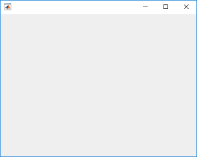
Add two drop-downs, a list box, and an axes component to the grid. If you do not
specify row or column locations for the Layout property of
components, they populate the grid from left to right and top to bottom by default. In
this case, move the second drop-down (dd2) and the list box
(chanlist) to specific rows and columns by setting the
Layout property.
% Device drop-down dd1 = uidropdown(g); dd1.Items = {'Select a device'}; % Range drop-down dd2 = uidropdown(g); dd2.Items = {'Select a range'}; dd2.Layout.Row = 2; dd2.Layout.Column = 1; % List box chanlist = uilistbox(g); chanlist.Items = {'Channel 1','Channel 2','Channel 3'}; chanlist.Layout.Row = 3; chanlist.Layout.Column = 1; % Axes ax = uiaxes(g);
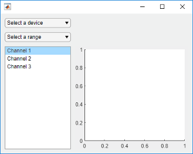
Set the axes to span rows 1 through 3, filling the vertical space.
ax.Layout.Row = [1 3];
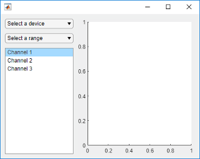
When you resize the figure, the axes grow and shrink to fill the available space
that the left column does not use. The components on the left side remain fixed because
that column is defined as 150 pixels wide.
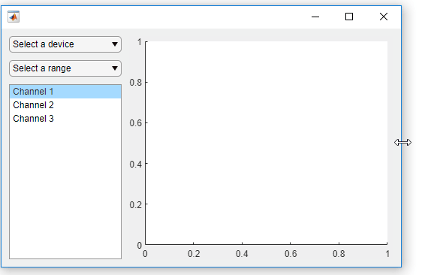
When you assign different weights to variable-width columns, the width of each column is proportional to the weight. Variable-height rows allocate space the same way.
Create a figure and a 2-by-2 grid. Then configure the row heights and the column widths. In this case, the top row is fixed at 40 pixels, while the bottom row has a variable height. Both columns have a variable width, but the second column has twice the weight of the first column. Because the grid is invisible, the figure appears to be empty.
fig = uifigure('Position',[100 100 437 317]); g = uigridlayout(fig,[2 2]); g.RowHeight = {40,'1x'}; g.ColumnWidth = {'1x','2x'};
Add a label across both columns of the top row. Then add an axes component to each column of the bottom row.
% Add title title = uilabel(g,'Text','Market Trends'); title.HorizontalAlignment = 'center'; title.FontSize = 24; title.Layout.Row = 1; title.Layout.Column = [1,2]; % Add two axes ax1 = uiaxes(g); ax2 = uiaxes(g);
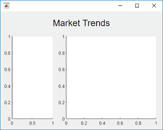
Because the left column has a weight of 1, and the right column
has a weight of 2, the axes on the right use twice as much of the
horizontal space as the axes on the left. The grid maintains this ratio when you resize
the figure.
Nested grids allow you to manage subsets of components. In this case, there are three grids: one grid that covers the entire figure, a second grid that manages a vertical stack of components, and a third grid that manages two buttons that are side by side at the bottom of the vertical stack.
Create a figure and a 1-by-2 grid. Then configure the column widths. In this case,
the left column is fixed at 150 pixels, while the right column has a
variable width. Because the grid is invisible, the figure appears to be empty.
fig = uifigure('Position',[100 100 500 315]); grid1 = uigridlayout(fig,[1 2]); grid1.ColumnWidth = {150,'1x'};

Create a 4-by-1 grid called grid2 inside the first column of
grid1. Then add an axes component to the second column of
grid1.
grid2 = uigridlayout(grid1,[4 1]);
grid2.RowHeight = {22,22,22,44};
ax = uiaxes(grid1);
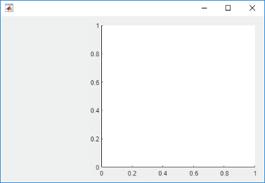
Add three drop-downs to the first three rows of grid2.
% Routes drop-down ddRoutes = uidropdown(grid2); ddRoutes.Items = {'Route 1', 'Route 2'}; % Direction drop-down ddDirection = uidropdown(grid2); ddDirection.Items = {'Inbound', 'Outbound'}; % Time drop-down ddTime = uidropdown(grid2); ddTime.Items = {'Morning', 'Afternoon'};
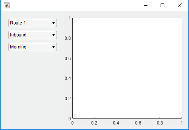
Create a 1-by-2 grid called grid3 inside the last row of
grid2. Then add two buttons to grid3. Remove the
padding on the left and right edges of grid3 so that the buttons
align with the left and right edges of the drop-downs.
grid3 = uigridlayout(grid2,[1 2]); grid3.Padding = [0 10 0 10]; b1 = uibutton(grid3,'Text','Start'); b2 = uibutton(grid3,'Text','Stop');
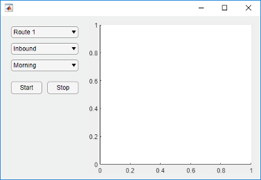
When you resize the figure, the axes grow and shrink to fill the available space
that the left column of grid1 does not use. The components on the
left side remain fixed because that column is defined as 150 pixels
wide.
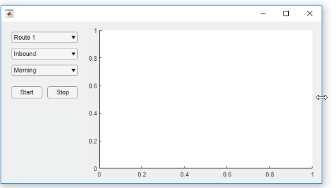
Bring child components of a scrollable grid layout into view by specifying pixel coordinates or a location name.
Create a 5-by-2 grid layout and set the Scrollable property
of the grid to 'on'. Then add a label, a table, and a panel to
the grid. Set the Scrollable property of the panel to
'off' and then add a chart to the panel.
fig = uifigure('Position',[782 497 435 311]); g = uigridlayout(fig,'Scrollable','on'); g.RowHeight = {22,40,22,22,400}; g.ColumnWidth = {400,400}; lbl = uilabel(g,'Text','Tsunamis'); lbl.Layout.Row = 2; lbl.Layout.Column = [1,2]; lbl.HorizontalAlignment = 'center'; lbl.FontSize = 28; tsunamis = readtable('tsunamis.xlsx'); tsunamis.Cause = categorical(tsunamis.Cause); t = uitable(g,'Data',tsunamis); t.Layout.Row = [3,5]; t.Layout.Column = 2; p = uipanel(g); p.Scrollable = 'off'; p.Layout.Row = [3,5]; p.Layout.Column = 1; gb = geobubble(p,tsunamis.Latitude,tsunamis.Longitude,... tsunamis.MaxHeight,tsunamis.Cause);
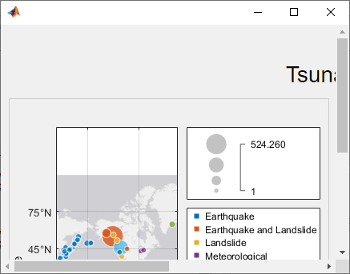
Scroll to a location in the grid.
scroll(g,100,-30)

Now use location names to scroll to the bottom-right corner of the grid.
scroll(g,'bottom','right')
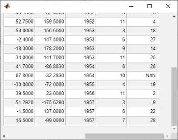
Create a grid layout manager that automatically adjusts its row and column sizes to fit components like labels as you add them to your app, or when the font size of text-based components changes dynamically.
Create a 5-by-2 grid layout manager. Specify 'fit' for the first
column width and the first four row heights.
fig = uifigure('Position',[500 500 430 310]); g = uigridlayout(fig); g.ColumnWidth = {'fit',120,'1x'}; g.RowHeight = {'fit','fit','fit','fit','1x'};
Create a title label that spans all the columns. Then, create labels and controls
along the rows of the first and second columns. Lastly, create a table UI component in
the last column that spans rows two through five. Notice that as you add components to
the rows and columns with 'fit' height and width, the size of those
row and columns automatically adjusts to fit the new content.
patientLabel = uilabel(g,'Text','Patient:'); patientLabel.Layout.Row = 2; patientLabel.Layout.Column = 1; patientEdit = uieditfield(g); ageLabel = uilabel(g,'Text','Age:'); ageLabel.Layout.Row = 3; ageLabel.Layout.Column = 1; ageEdit = uidropdown(g,'Items',{'<20','20 - 40','40 - 60','>60'}); stateLabel = uilabel(g,'Text','State:'); stateLabel.VerticalAlignment = 'top'; stateLabel.Layout.Row = 4; stateLabel.Layout.Column = 1; stateLB = uilistbox(g,'Items',{'MA','VA','WY'}); tdata = readtable('patients.dat'); uit = uitable(g); uit.Data = tdata; uit.Layout.Row = [2 5]; uit.Layout.Column = 3;
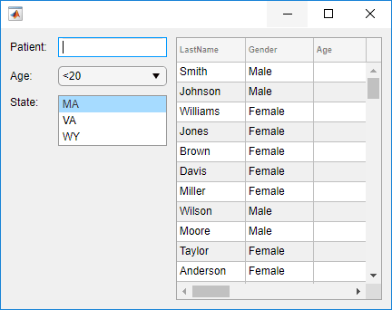
Now, change the font name and font size of all the UI components in the grid.
set(allchild(g),'FontName','Lucida Console','FontSize',20)
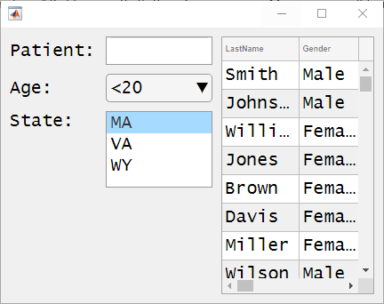